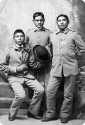
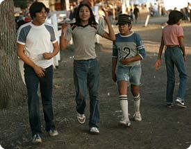

|

|
|

Students at the Carlisle Indian Industrial School, Carlisle, Pennsylvania
Copyright Western History Department,
Denver Public Library |
Acculturation
The U.S. government attempted to, force the Native people on the reservation to
accept the cultural practices of the Euro-Americans. However, many reservations
created after the Civil War were little more than prison camps. The reservation
lands were often unproductive and rations given to people were inadequate, so many
died of starvation and disease. Some reservations required that Indians apply for
permits to leave the reservation. To discourage Native people from retaining their
own cultures, reservation officials denied them the right to speak their own
languages or to practice their most sacred ceremonies. Native American children were
often taken from their families and placed in boarding schools against their parents'
wishes. Once removed from their own traditions, the children were more likely to
become
assimilated
into white culture.
Allotment of Land
Government policy towards Indian land changed from tribal ownership of reservation
land to individual ownership of lots of land with the passage of the Dawes Allotment
Act in 1887. The Act was implemented to give each American Indian a plot of land with
the intention of teaching them to farm and hasten assimilation of Native people into
the Euro-American culture. In order for the individual allotments to be made, Native
people had to surrender their reservation lands to the government. After the government
allotted 169 acres to each adult and 80 acres to each child, the rest of the reservation
land was offered for sale to non-Indians. Of the 138 million acres of land in Indian
possession at the onset of the Dawes Act, only 48 million acres remained in Indian hands
by 1932. Today, only 2 percent of the land of the 48 contiguous states belong to American
Indians. The people of the Red Lake Reservation in Minnesota take great pride in the fact
that they never surrendered their land for allotment. Today their reservation is among
the few lands in America never owned by Euro-Americans.

Native American children today share the interests of all American
children as well as interest in their own cultural traditions. Courtesy: Library of
Congress
|
Native Americans Today
The history of the Native American people is a story of loss, but more than that, it is a
story of resilient strength, and continuity. Despite tremendous obstacles, Native Americans
have survived. Although their population was decimated, they have recovered. In 1917, for
the first time since the arrival of Europeans on this continent, more Native Americans
were born than died. Today approximately 2,500,000 Native Americans live in the United
States. And, the world they live in is changing. Native Americans are renewing their own
pride in their traditions. Education has enabled the Native people to benefit themselves
and to accomplish much in the outside world. Today, many American Indian people regard themselves as
nations within a nation, governed by their own tribal governments. They have hope for the future.
More about Native American History and Culture
|